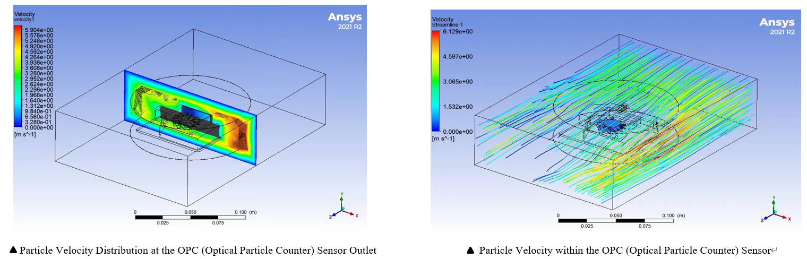

Aerosol Measurements by OPC Aided by QCM Mass Sensor
View my publication on Aerosol Measurements by OPC Aided by QCM Mass Sensor
Project Overview
• Role: CAE Analyzer on Structure Mechanics• Date: Jan. 2023 - Aug. 2023
• Skills: Particle Dynamics Simulation and Structural Design
• Aim: Enhancing accuracy by combining two air quality sensors, ensuring comprehensive particle detection
Key Contribution
OPC performance and Analysis
• Employed SolidWorks to create a 1:1 sketch of the air pollution sensor,
ensuring accurate representation in the design phase
• Utilized SolidWorks for particle analysis to simulate the behavior of particles during detector operation
• Leveraged the data obtained to generate a preliminary design for the sensor
attachment, optimizing its functionality based on particle behavior

Attachment Design Optimization
• Objective: Design an OPC and QCM attachment to enhance data accuracy, aiming to improve it from 30% to 80% for more reliable and precise measurements
• Constraints: PLA material,Particle movement and velocity
• Design variables: outlet location,Attachment outlet dimension
Results and Impact
Developed an attachment to integrate OPC and QCM sensors, enhancing measurement efficiency and accuracy by 30%. While the original OPC sensor could only test liquids or solids, the combined system can analyze aerosols, making it applicable in environments such as gyms with high occupancy, where it can effectively monitor CO2 levels.